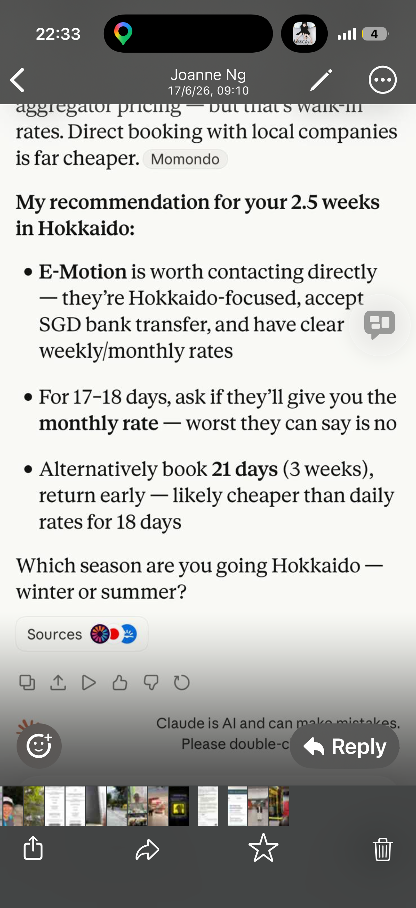

Depart Singapore at 7:40 AM — Paul & Joanne, Tokyo bound! Arrival at Narita International Airport.早上 7:40 从新加坡出发 — Paul 和 Joanne，飞往东京！抵达成田国际机场。
🗼 Explore游览
Tokyo东京
1 – 6 Jul 2026 · 6 days6天
▾
1 week in Tokyo — sightseeing, food, culture. Shibuya, Asakusa, Shinjuku and beyond. Catching the 13:40 Peach flight to Sapporo on 6 Jul.在东京游览一周 — 观光、美食、文化。涩谷、浅草、新宿等地。6月7日搭乘13:40的 Peach 航班前往札幌。
Narita Airport → Shinagawa
Take N'EX Narita Express (成田エクスプレス) from Arrivals B1F. ~55 min · ¥3,070 · Every 30–60 min · Seat included
Buy at JR ticket window or any ticket machine (English available).
2
Transfer at Shinagawa 品川
Follow signs: JR Keihin-Tohoku Line (京浜東北線) — light-blue line. Southbound toward 蒲田 Kamata / 横浜 Yokohama · Platform 3 or 4
Trains run every 2–5 min. No reservation needed.
Kamata Station → Hotel
Use East Exit (東口) · ~5–8 min walk to hotel. 4-26-10 Kamata, Ota-ku · 144-0052
⏱ Total ~70 min · 💴 ~¥3,250 · 🧳 N'EX has overhead luggage racks
💳 Tip: Get a Suica IC card at Narita (¥500 deposit) — tap in/out for all trains, no paper tickets needed.
🏨 BON Tokyo Kamata Parkside — Check-in Guide入住指南
📶 Free WiFi免费WiFi⏰ Check-in from 4:00 PM下午4点后入住🕙 Check-out by 10:00 AM上午10点前退房
Check-in Steps (Semi Self-Service)入住步骤（半自助）
1
Enter entrance door code (shared privately) on the small black panel on the right在右侧小黑色面板输入门禁码（私信已告知）
2
Enter your 8-digit check-in code on the lobby tablet → press OK在大堂平板输入 8位入住码 → 按OK
3
Confirm reservation details → OK确认预订详情 → OK
4
Operator remotely photographs faces + passports of ALL guests工作人员远程拍摄所有客人的脸和护照
5
Agree to house rules同意住房规则
6
Receive room number + door code获得房间号和门禁码
⚠️ Must bring:必须携带： Passports for ALL guests (originals, no copies) 所有客人的原版护照（不接受复印件）
⚠️ Door code expires automatically at 10:00 AM on 6 Jul门禁码于7月6日上午10点自动失效
⚠️ Late check-out = ¥3,000/hr延迟退房收费 ¥3,000/小时
Mon, 6 Jul 2026 · 13:40 Narita T1 → 15:30 New Chitose D
▾
Flight: Peach MM571 · Booking Ref: BBZ5DU
On arrival: go to Toyota Rent a Car counter at Domestic Arrivals 1F (Exit 3), take free 9-min shuttle, then drive to Niseko (~2h).航班：Peach MM571 · 订单号：BBZ5DU
到达后：前往国内到达楼1F（3号出口）的丰田租车柜台，乘坐免费接驳车约9分钟，然后驾车前往二世谷（约2小时）。
🌿 Nature自然
Niseko, Hokkaido二世谷，北海道
6 – 27 Jul 2026 · 21 days21天
▾
3 weeks based in Niseko — relax, hike Mt Yotei, soak in onsen, explore lavender fields, and enjoy Hokkaido's legendary seafood.在二世谷住三周 — 休闲放松，攀登羊蹄山，泡温泉，游览薰衣草花田，品尝北海道的新鲜海鲜。
🏠 Accommodation Address住宿地址
🇬🇧 ENGLISH
Minami 11 Jo Nishi 1-46-1, Kutchan-cho, Hokkaido 044-0045, Japan
Peach Aviation uses Narita Terminal 1 (T1) — not T2 or T3.
Check in at Peach counter, drop luggage, go through immigration & security.
Gate opens ~12:40.Peach 航空使用成田1号航站楼（T1） — 非T2或T3。
在Peach柜台办理值机、托运行李、通过安检。
登机口约12:40开放。
Narita T1 → New Chitose Airport (CTS) — Sapporo, Hokkaido.
Domestic flight — no customs on arrival, just baggage claim.
Estimated landing: 15:30.成田T1 → 新千岁机场（CTS） — 北海道札幌。
国内航班 — 无需清关，直接取行李。
预计降落时间：15:30。
3
Land at New Chitose Airport (CTS)抵达新千岁机场（CTS）
~15:30 — Domestic Terminal约15:30 — 国内航站楼
Walk to baggage claim — domestic bags arrive fast (10–15 min).
Collect all luggage before heading to Toyota counter.前往行李提取处 — 国内行李到达很快（10–15分钟）。
取完所有行李后再前往丰田柜台。
Go to Domestic Arrivals 1F (Exit 3) — ANA side.
Look for Toyota Rent a Car sign / yellow logo.
Show booking confirmation: Booking No. 4110004490.
Staff will register you and arrange the shuttle.前往国内到达楼1F（3号出口） — ANA一侧。
寻找丰田租车标志／黄色标识。
出示预订确认函：预订号 4110004490。
工作人员将为您办理登记并安排接驳车。
📞 Toyota Chitose: 0123-24-0100
5
Take Free Shuttle to Toyota Shop乘坐免费接驳车前往丰田门店
~16:00 — 9 minutes ride, free约16:00 — 免费，约9分钟
Staff will guide you to the shuttle bus stop outside.
Shuttle runs regularly — 9-minute ride to the shop.
Luggage goes on the bus with you.工作人员将引导您前往门外的接驳车站。
接驳车定时运行 — 到达门店约9分钟。
行李可随您一同带上车。
Show driving licence (Singapore) + international permit (IDP).
Staff will walk you around the car — check for existing scratches before signing.
Car is reserved: 6 Jul – 28 Jul · 22 days.
Return date: 28 Jul, 10:00 AM.出示驾照（新加坡）+ 国际驾照（IDP）。
工作人员会带您绕车一圈 — 签字前检查是否有原有划痕。
预订期：7月6日 – 7月28日 · 22天。
还车日期：7月28日上午10:00。
7
Set GPS & Start Driving to Niseko设置导航并驾车前往二世谷
~16:30 — Depart Toyota shop约16:30 — 从丰田门店出发
Set GPS to: Minami 11 Jo Nishi 1-46-1, Kutchan-cho, Hokkaido
or enter coordinates: 42.9007, 140.7537
🛣️ Driving Route
① Exit Toyota shop → join 道央自動車道 (Dōō Expressway) ② Head south on expressway ~70 km ③ Exit at 喜茂別 Kimobetsu IC → join Route 230 west ④ Continue to 倶知安 Kutchan town → hotel ⑤ Total: ~100 km · ~2 hours
8
Arrive Niseko Hotel — Check In 🎉抵达二世谷酒店 — 办理入住 🎉
~18:30 — Minami 11 Jo Nishi 1-46-1, Kutchan约18:30 — 倶知安町南11条西1丁目46-1
Check in at hotel. 22 nights in Niseko begins! 🏔️
Check-out: 28 Jul 2026.办理入住。二世谷22晚之旅正式开始！🏔️
退房日期：2026年7月28日。
✈️
13:40
Depart NRT出发NRT
🛬
15:30
Land CTS降落CTS
🪧
15:45
Toyota Counter丰田柜台
🚗
16:30
Start Drive出发驾车
🏠
~18:30
Arrive Hotel抵达酒店
🚗 6 Jul, arrive 15:30 — Shop open until 22:00. Go to counter first, then free shuttle to shop.
🚗 Toyota Rent a Car — New Chitose Airport丰田租车 — 新千岁机场
ポプラ店
📍 Step 1 — Airport Counter第1步 — 机场柜台
Go to Toyota counter at Domestic Arrivals 1F (near Exit 3, ANA side). Check in first.前往国内到达楼1F（3号出口附近，ANA一侧）的丰田柜台，先办理登记。
🚌 Step 2 — Free Shuttle第2步 — 免费接驳车
Free shuttle bus to the shop — takes about 9 minutes. No charge.免费接驳车送您到门店 — 约9分钟，无需付费。
🗣️ Counter staff are English-friendly — used to foreign tourists.
🧳 Put luggage on shuttle, collect car, head to Niseko (~2h drive).
📝 Ask for monthly rate for 3-week stay — likely cheaper than daily.🗣️ 柜台工作人员会英语 — 习惯接待外国游客。
🧳 行李上接驳车，取车后驾车前往二世谷（约2小时）。
📝 询问3周的月租优惠 — 可能比按日计算更划算。
🎉 Booked! Toyota Rent a Car · New Chitose Airport Suzuran · Res. 99870766200
Soak in natural hot springs surrounded by Hokkaido's lush summer green在北海道郁郁葱葱的夏日绿意中泡天然温泉
🌸
Summer Lavender Fields夏日薰衣草花田
July is peak lavender season in Hokkaido — fields of purple in bloom7月是北海道薰衣草盛季 — 紫色花田盛开
🍣
Fresh Hokkaido Seafood北海道新鲜海鲜
Sea urchin, crab, and sushi — Hokkaido's seafood is legendary海胆、螃蟹与寿司 — 北海道海鲜享誉全国
🚗Hokkaido Car Rental — E-Motion北海道租车 — E-Motion▾
Hokkaido-focused, accepts SGD bank transfer, clear weekly/monthly rates.
For 17–18 days ask for monthly rate. Booking 21 days (3 weeks) and returning early is likely cheaper than daily rates for 18 days.专注北海道，接受新加坡元转账，周租/月租价格清晰。
租17–18天请询问月租优惠。预订21天（3周）提前还车，通常比按日计算18天更划算。

🗺️Getting Around Hokkaido北海道出行指南▾
Niseko to New Chitose Airport: ~2 hours by car (Route 230 → expressway). Fuel: Regular gasoline (レギュラー). Fill up in towns — rural areas have fewer stations. Driving: Left side of road. Speed limit 60–80 km/h on rural roads. Watch for deer/fox at night.二世谷至新千岁机场：驾车约2小时（230号国道 → 高速）。 燃油：普通汽油（レギュラー）。在城镇加油 — 农村加油站较少。 驾驶：靠左行驶。农村道路限速60–80 km/h。夜间注意鹿/狐狸出没。
📱Connectivity & Navigation网络与导航▾
Get a Japan SIM card or pocket Wi-Fi at Narita on arrival. Maps: Google Maps works well. Download offline Hokkaido maps before leaving Tokyo. Suica card: Useful for trains and convenience stores in Tokyo.抵达成田时购买日本SIM卡或随身Wi-Fi。 地图：谷歌地图可用。离开东京前下载北海道离线地图。 Suica卡：在东京乘车和便利店消费很方便。